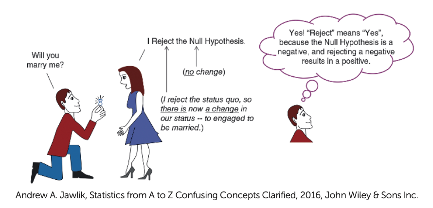
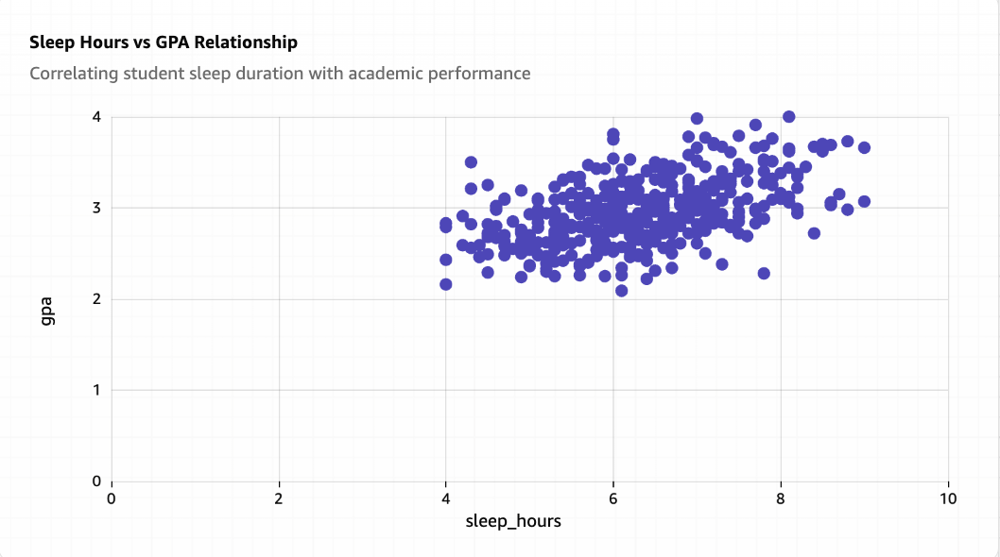
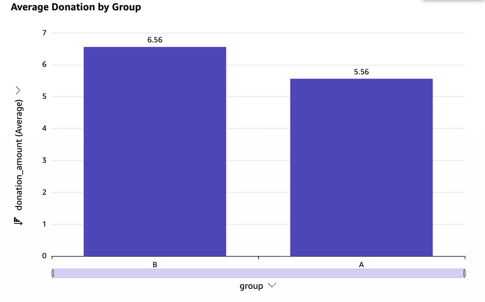
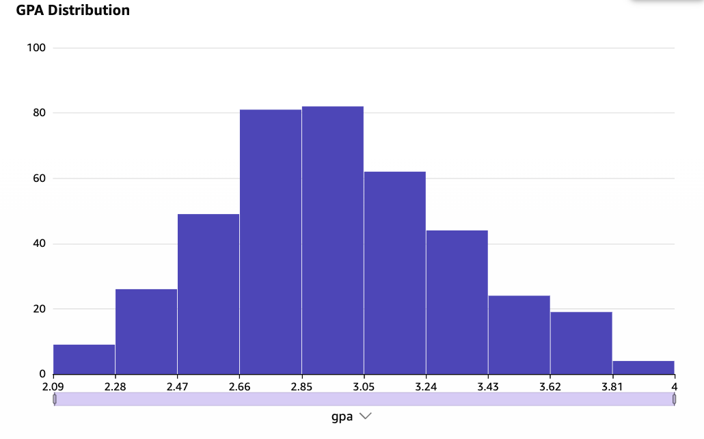
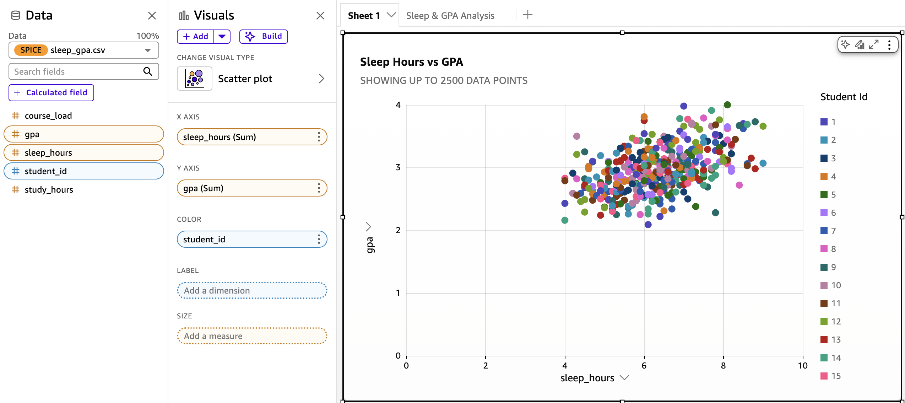
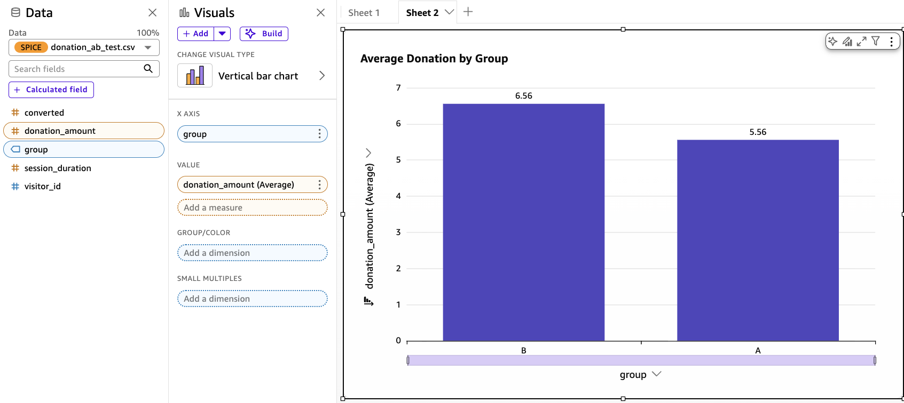
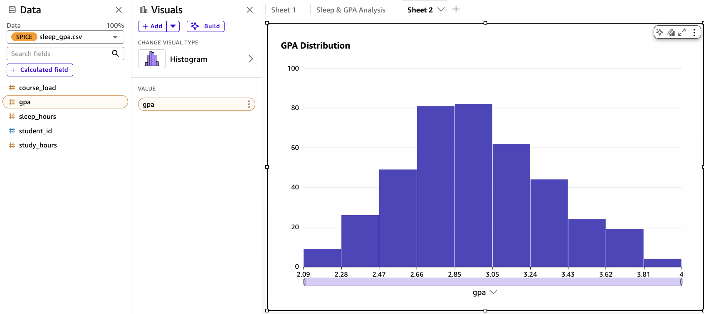

DRAWING CONCLUSIONS FROM DATA
Can Data Tell Us What Is True?
We collect data every day.
But how do we know what that data actually tells us?
DATA
ANALYSIS
?
CONCLUSION
02PROLOGUE
Meet Hazel and Everett
Hazel
12th grade
Everett
her best friend
The Hometown Times
LOCAL NEWSEDITION 12
Local high school wins nationwide attention
Students post exceptional test scores and performance
03PROLOGUE
Is the school telling the truth?
THE SCHOOL REPLIES TO THE NEWSPAPER
“Our students’ achievement is linked to many fine aspects of our school, but importantly to well-balanced lifestyles and incredible personal health. We support our students in eating and sleeping well!”
We don’t always get enough sleep. We stay up late to study!
Then why is everyone we know exhausted?
Hazel and Everett will check it with data.
PLAN→DATA→EVIDENCE→VERDICT
04ACT 1 · THE PLAN
Three hunches. One sample.
SLEEP
Fewer than half sleep 8+ hours
national: 50%
GRADES
The average GPA is above 3.0
national: 3.0
LINK
More sleep goes with higher GPA
we will see
THE SCHOOL · 384 STUDENTS
{{ wobGrid }}
● sleeps 8+ h● sleeps less● not asked
{{ wobHist }}
Every sample tells a slightly different story.
05ACT 1 · THE PLAN
Bigger sample, smaller margin of error
A bigger sample lands closer to the truth. The margin of error says how close.
margin of error = 1.96 × σ√n
σ = spread of the data (GPA ≈ 0.5)n = students surveyed1.96 = 95% confidence
500 students
±0.044
1,000 students
±0.031
2,000 students
±0.022
REMEMBER
4× the students only halves the error. And size never fixes bias: 2,000 students from one dorm is still a bad sample.
06ACT 2 · GATHERING EVIDENCE
The scientific method
CONCLUSIONS
LEAD TO NEW
QUESTIONS
01AskWhat are we trying to find out?IN OUR STUDYDoes sleeping more relate to better academic performance?
02ResearchWhat do we already know?IN OUR STUDYEarlier studies link sleep to memory and concentration.
03HypothesizeWhat do we expect?IN OUR STUDYStudents who sleep more have higher GPAs.
04CollectHow will we get the data?IN OUR STUDYSurvey 400 students: sleep hours, study hours, course load, GPA.
05AnalyzeWhat does the sample show?IN OUR STUDYScatter plot, correlation, hypothesis test.
06ConcludeWhat can we infer?IN OUR STUDYAn association in the population our sample represents. Not a cause.
07ACT 2 · GATHERING EVIDENCE
Experiments and variables
DEFINITION
Experiment
We apply a treatment on purpose to chosen groups, then measure the response.
Example: half the volunteers sleep 8 hours, half sleep 5 hours. Then we compare GPA.
HAZEL AND EVERETT’S SLEEP STUDY
EXPLANATORY VARIABLE
Sleep hours
What we suspect drives the result
More sleep, higher GPA?
RESPONSE VARIABLE
GPA
The outcome we measure
08ACT 2 · GATHERING EVIDENCE
How should we collect the data?
{{ people }}
Select a study design.
Students choose their own sleep. We only record it.
A random process decides who gets the treatment.
CONTROL
TREATMENT
● sleeps 8 h +● sleeps less
09ACT 2 · GATHERING EVIDENCE
What else could be hiding?
HAZEL AND EVERETT ASK
Sleep and GPA move together. What else could change both?
Course load: a heavy load means less sleep and lower GPA.
{{ confLabel }}
ASSOCIATION
Sleep
GPA
Course load
Stress
Study time
Health
Work
CONFOUNDING VARIABLE
10ACT 2 · GATHERING EVIDENCE · 400 STUDENTS, ANOTHER SCHOOL
Correlation is not causation
{{ scatter }}
r = {{ rLabel }}
There is a positive correlation.
HOW WE GOT r
r = Σ(x − x̄)(y − ȳ) / √( Σ(x − x̄)² · Σ(y − ȳ)² )
How sleep and GPA move together ÷ how much each varies
Does this prove sleep causes higher GPA?
Correlation shows a relationship. It does not by itself prove causation.
Dots now colored by course load:
● 6–7 courses ● 3–4 courses ● 5 courses
11ACT 2 · GATHERING EVIDENCE
Does ice cream cause drowning?
r = 0.50
They rise together. Ban ice cream?
● cold day● hot day
Hot days bring both: more ice cream and more swimming.
Temperature
Ice cream
Drownings
r = 0.91
r = 0.56
no cause
12ACT 2 · GATHERING EVIDENCE
A real case: California’s gun-law program
THE QUESTION
Does taking guns away from people who are no longer allowed to have them reduce gun violence?
APPS · THE ARMED AND PROHIBITED PERSONS SYSTEM
Legal gun owner
APPS tracks legal gun ownership over time.
→
Becomes prohibited
Later deemed ineligible, for example after a felony conviction.
→
Gun is recovered
The program seeks to recover the gun.
SO FAR
Most gun-law research is observational: states with a law vs states without. That can confuse correlation and causation.
So, how would we test whether it works?
13ACT 2 · GATHERING EVIDENCE
How do we test whether a law works?
1 · OBSERVE
Compare states that have the law with states that don’t.
LAW
NO LAW
Different kinds of states, so we can’t tell what caused the difference.
2 · RANDOMIZE
Flip a coin for each community: law now, or law later.
LAW NOW
LAW LATER
Same mix in both groups, so only the law is different.
● ● ● ● each dot is a community. Its color is how it differs: income, culture, policing…
Random order → differences afterwards come from the law.
California’s APPS · 1,000+ communities · Dr. Garen Wintemute, UC Davis · 2024 result: no clear effect city-wide
14ACT 3 · THE SUSPICIOUS COIN
Is Michael's coin fair?
Michael flips his new coin 100 times and gets 60 Heads. How surprising is that?
aFigure 7.7 simulates a fair coin: 100 flips, repeated for 100 trials.
bHow many trials show exactly 60 Heads?
cBest estimate of the probability of a result as extreme as Michael's? (2 decimals)
dIs that probability high or low?
eEvidence for or against a fair coin?
+Describe the result with the STAR framework.
HEADS IN 100 TRIALS OF 100 FAIR FLIPS
{{ coinFig }}15ACT 3 · THE SUSPICIOUS COIN
Solving it, step by step
{{ coinLabel }}
{{ coinChart }}
A · WHAT DOES A FAIR COIN DO?
A computer flips a fair coin 100 times and counts the Heads. Then it repeats that 100 times.
Each bar counts how many of the 100 trials ended with that many Heads.
A · LOOK AT THE SHAPE
Most trials land close to 50 Heads. That is what “fair” looks like.
Far-out results, like 30 or 62, are rare.
B · FIND MICHAEL’S RESULT
2
of the 100 fair-coin trials landed on exactly 60 Heads.
Michael’s coin: 60 Heads.
C · COUNT “THIS EXTREME OR MORE”
Surprising means 60 or more, not only exactly 60.
2 + 1 = 3 of 100 trials
3 ÷ 100 =
0.03
D · HIGH OR LOW?
{{ coinDots }}
Low
Only 3 red dots out of 100. A fair coin rarely does this.
E · EVIDENCE FOR OR AGAINST?
0.03 < 0.05
α = 0.05: the cutoff we choose before looking at the data.
p < α, so reject H₀: evidence the coin is not fair.
Evidence, not proof. Exact binomial: 0.028. Counting both tails: 0.057, close to the line.
16DO IT YOURSELF
The result, in STAR
{{ starLabel }}
SSituation
TTask
AAction
RResult
WHAT IS STAR?
A way to write up a result so that anyone can follow it.
Situation · what happened
Task · what we had to decide
Action · what we did
Result · what we found
SITUATION · WHAT HAPPENED
60Heads in 100 flips
Michael has a new coin. A fair coin should land Heads about 50 times in 100.
Is 60 just luck, or is the coin biased?
TASK · WHAT WE MUST DECIDE
H₀ · the coin is fair (50% Heads)
Hₐ · the coin is not fair
Is 60 Heads surprising enough to doubt H₀?
ACTION · WHAT WE DID
Flip a fair coin 100×
→Count the Heads
→Repeat for 100 trials
Then count the trials with 60 or more Heads. Seed 777 makes it repeatable.
3 of 100 trials
RESULT · WHAT WE FOUND
0.03 < 0.05
A fair coin gives 60 or more Heads in about 3% of trials. That is below α = 0.05, so we reject H₀: evidence the coin is not fair.
Evidence, not proof. Counting both tails gives 0.057, close to the line.
17ACT 3 · THE SUSPICIOUS COIN
Statistical significance
DEFINITION
A result is statistically significant if it is unlikely to occur due to chance alone, assuming the hypothesis under investigation is true.
MICHAEL'S COIN
If the coin is fair, getting 60 or more Heads in 100 flips has a probability of about 0.03.
α = 0.05 is our cutoff, a line we draw before looking at the data. 0.03 is below it, so we have evidence to reject “the coin is fair”.
Whenever we have enough evidence to reject our original hypothesis, we say the result is statistically significant.
18ACT 3 · THE SUSPICIOUS COIN
Terms of statistical inference
The population is every flip this coin could ever make.
What we want to know: is the coin fair?
And all we actually have is 100 flips.
The null says nothing special is going on: the coin is fair.
The alternative is my suspicion: the coin is not fair.
POPULATION OF INTEREST
All possible flips of Michael’s coin
WHAT WE WANT TO INFER
Is the coin fair?
DATA WE HAVE
The 100 flips Michael handed us
NULL HYPOTHESIS · H₀
The coin is fair
No change. No effect. No difference.
Always has=
ALTERNATIVE HYPOTHESIS · Hₐ
The coin is not fair
The researcher’s suspicion.
Uses><or≠
19ACT 3 · THE SUSPICIOUS COIN
What does “reject the null” mean?

20ACT 3 · THE SUSPICIOUS COIN
Statistic and p-value
DEFINITION
Statistic
Any characteristic, aggregation, or function of our sample data. We compute statistics to estimate the population characteristics we want to draw conclusions about.
In the coin example: the number of Heads in 100 flips. The proportion of Heads would work too.
In the coin example: the number of Heads in 100 flips. The proportion of Heads would work too.
DEFINITION
p-value
The probability of obtaining a value of the statistic at least as surprising (extreme) as the observed statistic, assuming the null hypothesis is true.
Estimate it as the proportion of simulated statistics at least that surprising. Lower p-values are stronger evidence against the null.
Estimate it as the proportion of simulated statistics at least that surprising. Lower p-values are stronger evidence against the null.
21ACT 4 · CRACKING THE CASE · THEIR SAMPLE, n = 58
Inference for a mean
THE QUESTION
Is the average GPA at their school above the national average of 3.0?
Hazel and Everett survey 58 students at their school and get a sample mean of 3.971. Is that just luck, or a real difference?
NULL HYPOTHESIS · H₀
The mean GPA at their school is 3.0 (μ = 3.0)
ALTERNATIVE HYPOTHESIS · Hₐ
The mean GPA at their school is over 3.0 (μ > 3.0)
A mean is not a yes/no like Heads, so no coin simulation. We use the t-test: is 3.971 far enough from 3.0 to not be luck?
DEFINITION
t-test
Compares an average with a set value (one-sample) or with another group’s average (two-sample).
DEFINITION
t-test statistic
How far the data sits from what H₀ predicts. Near 0: nothing unusual. Far from 0: surprising.
22ACT 4 · CRACKING THE CASE · THEIR SAMPLE, n = 58
Same distance, different variability
SIMULATED GPA · MEAN 3.0 · SD 0.2
SIMULATED GPA · MEAN 3.0 · SD 0.5
Both sample means are 3.971, the same distance from 3.0. With less variability (left), 3.971 is much more surprising.
23ACT 4 · CRACKING THE CASE · A DIFFERENT EXAMPLE, n = 40
The one-sample t-test
{{ tLabel }}
CLAIM
H₀: μ = 3.0
Hₐ: μ ≠ 3.0
SAMPLE
n = 40
x̄ = 3.24
s = 0.68
2.6
2.8
3.2
3.4
3.6
μ₀ = 3.0
difference = 0.24
1 SE
2 SE
x̄ = 3.24
Is this difference large compared with the variability in the sample?
SE = s / √n = 0.68 / √40 = 0.108. The t-statistic counts how many SE units the sample sits from μ₀.
t =
3.24 − 3.000.108
=
2.22
p-VALUE
0.032
24ACT 4 · CRACKING THE CASE · THEIR SAMPLE, n = 58
The null distribution of t
NULL DISTRIBUTION · HAZEL AND EVERETT (n = 58)
If H₀ is true, t should be close to 0. The farther from 0, the more surprising our data.
The null distribution depends on the sample size (here n = 58). The p-value is the area to the right of our t, in the direction of Hₐ.
t = 21.8, p ≈ 0: strong evidence to reject H₀. The average GPA of students at their school, like those in the sample, is greater than 3.0.
25ACT 4 · CRACKING THE CASE
Reading the p-value
{{ curve }}
p-VALUE{{ tc.p }}
α0.05
0.032 < 0.05→ Statistically significant
0.18 > 0.05→ Not statistically significant
Significance is a decision rule. It does not say the effect is large or important.
26ACT 4 · CRACKING THE CASE · THEIR SAMPLE, n = 58
So, was the school right?
✓
Are grades above 3.0?Yes · mean GPA vs 3.0 · p ≈ 0
3.971
✓
Does more sleep go with higher GPA?Yes · a positive link · p ≈ 0
r = 0.47
✗
Do most students sleep 8+ hours?No · only 19 of 58 do · p ≈ 0.005
33%
Half right.
An association, not a cause.
27ACT 4 · CRACKING THE CASE
Scope of inference
OUR SAMPLE · 400 UNIVERSITY STUDENTS
Who can we reasonably generalize to?
The sample contains no children, retirees or non-students.
Only if the 400 were sampled from all university students.
Inference depends on what population the sample actually represents.
Every human being
All university students
Students reached by our sampling
n = 400
28ACT 4 · CRACKING THE CASE
Extrapolation
“18 hours of sleep will keep improving GPA.”
{{ extrap }}
Don't extend conclusions beyond the data without justification.
29ACT 5 · WHEN EVIDENCE LIES
The confusion matrix
H₀ true
H₀ false
Reject H₀
Type I errorfalse positive
True positiveeffect found
Fail to reject H₀
Type II errorfalse negative
True negativenothing missed
Type IFalse PositiveWe think there is an effect when there isn't one.Probability = α
Type IIFalse NegativeWe fail to detect an effect that actually exists.Probability = β
PrecisionWhen we reject H₀…How often is the effect real?
TPTP + FP
RecallOf all real effects…How many do we catch? (also called sensitivity)
TPTP + FN
30ACT 6 · THE EXPERIMENT
Now, an experiment on their website
Our website collects donations for the school club.
What if a new donate page brings in more?
THEIR DONATE PAGE
Instead of guessing, they test it.
31ACT 6 · THE EXPERIMENT
What is an A/B test?
A/B test = a race between two versions.
A randomized experiment.
VISITORS
RANDOM
Version A
The original
Version B
The new one
HOW WE MEASURE THE RESPONSE
Average view duration
Completion rate
Sharing
Click-through rate
32ACT 6 · THE EXPERIMENT
Does changing a donation page increase donations?
RANDOM
+
SIMULTANEOUS
50% of visitors → A
50% of visitors → B
Visitors→A / B→Donations→Analysis
Visitors
{{ stream }}
donate.example.org
VERSION A · ORIGINAL
Donate Now
Support our work with a one-time gift.
Donate
donate.example.org
VERSION B · MODIFIED
Help Provide Clean Water
€20 gives one family clean water for a month.
Donate
33ACT 6 · THE EXPERIMENT
The two phases of an A/B test
PHASE 1
Testing phase
90%No treatment (status quo)
5%Treatment A
5%Treatment B
A small group sees A or B, and we compare.
Winner decided
PHASE 2
Implementation phase
100%Winner
The winner goes to everyone.
EXAMPLE
5,000 of 50,000 visitors take part: 2,500 see A, 2,500 see B. The other 45,000 keep the current page.
34ACT 6 · THE EXPERIMENT
How randomization works
1
Decide how many
5,000 of 50,000 visitors take part (10%).
2
Pick at random
Everyone has the same chance, like a coin flip for each visitor.
3
Split at random
Half see only A, half see only B.
ABCurrent page
QUICK TIP
Compare equal-sized groups. It keeps the comparison fair.
35ACT 6 · THE EXPERIMENT
Before implementing, ask
QUESTION 1
Was it the timing?
Did the period itself make the difference?
QUESTION 2
Is the difference significant?
Or could chance alone produce the gap?
QUESTION 3
Does it last?
Keep watching for several months.
QUESTION 4
Do testers represent future visitors?
If conditions change, rerun the test.
36ACT 6 · THE EXPERIMENT
The two-sample t-test
DEFINITION
Two-sample t-test
Compares the average of two groups, A and B.
H₀
Same average donation (difference = 0)
Hₐ
B donates more than A on average
t* = (x̄₁ − x̄₂) − hypothesized difference√(s₁²/n₁ + s₂²/n₂)
Top: the difference we saw
Bottom: the variability
If H₀ is true, t is close to 0.
QUICK TIP
Also check practical size: a 1% gain can mean hundreds of dollars a year.
37ACT 6 · THE EXPERIMENT
Is the difference statistically significant?
H₀: μA = μBHₐ: μA ≠ μB
A
€18.22
B
Average donation among donors · donation_ab_test.csv · 311 donors (A), 320 donors (B)
€20.10
B looks higher. Could a gap this size appear by chance alone?
TWO-SAMPLE t-TEST
t = 2.44p = 0.015
α = 0.05
p < α → Reject H₀
Testing→Evidence→Implementation→100% Traffic
A · {{ abS.aL }}
B · {{ abS.bL }}
38ACT 6 · THE EXPERIMENT
Why both versions run at the same time
JanFebMarAprMayJunJulAugSepOctNovDec
BAD SETUPOne after another
A
B
Weather
Holidays
Economy
Marketing
The difference may not come from the website version.
GOOD SETUPAt the same time
A
B
Both versions see the same weather, holidays, economy and marketing.
39CLOUD ANALYTICS

What is Amazon QuickSight?
A cloud BI service that turns data into charts in the browser. No servers to run.
01
Data source
Where the data lives: a CSV upload, S3, a database.
02
Dataset
Loaded into SPICE, QuickSight's in-memory engine.
03
Analysis
Drag fields onto a visual: scatter, bar, histogram.
04
Dashboard
Publish the visuals and share them.
WHAT WE USE IT FOR
Describe the data: patterns, groups, distributions.
WHAT IT DOES NOT DO FOR US
Decide if a pattern is real. That is statistical inference.
40CLOUD ANALYTICS
What QuickSight can do
Much more than a chart maker.
Connect anything
Files, S3, Athena, Redshift, RDS, Snowflake, Salesforce and more.
Fast at scale
SPICE keeps data in memory, so charts react instantly, even on millions of rows.
30+ visual types
Bar, line, scatter, heat map, pivot table, map, KPI, funnel.
ML insights
Spots anomalies and forecasts trends. No data scientist needed.
Ask in plain English
Type a question and get a chart, with Amazon Q in QuickSight.
Share with thousands
Dashboards in the browser, in emails, or embedded in your own app.
BUT REMEMBER
It describes very well. A forecast or a flag is still not a hypothesis test.
41CLOUD ANALYTICS
From CSV to insight
{{ pulse }}
Student / Website Data
CSV
Amazon QuickSight
Charts & Statistics
Statistical Inference
Conclusion

Sleep Hours vs GPAScatter plot

Control vs TreatmentBar chart

GPA DistributionHistogram



42CLOUD ANALYTICS
Dashboards describe. Inference decides.
QUICKSIGHT SHOWS
What is in the data
The average
The spread
Do two things move together?
≠
WE DECIDE WITH INFERENCE
Is it real or luck?
Could this be chance?
The t-statistic
The p-value
CSV→QuickSight→chart→“r = 0.48. But is it real?”→t-test, p-value
WATCH OUT
A dashboard shows whatever you feed it. Biased sample or hidden confounder? A pretty chart still misleads.
43EPILOGUE · ETHICS
What happens when we manipulate the analysis?
α = 0.05
0
0.15
{{ phS.p }}
Run testp = 0.12
“Try another analysis”p = 0.08
“Collect a little more data”p = 0.04
p-hacking
Changing decisions until the desired p-value appears undermines the validity of the result.
REPRODUCIBILITY
Predefine α
Document the analysis
Share data when appropriate
Allow others to verify the result
44YOUR TURN
You collected the data. What should you conclude?
Scenario: Version B has a higher average donation.
Too early. Random assignment allows a causal claim only once the difference is shown to be unlikely under chance.
Right. Observed difference first, then a two-sample t-test, then a decision based on p and α.
Statistics never makes anything definite. Even a significant result carries a Type I error risk of α.
RAW DATA→
QUESTION→
SAMPLE→
STUDY DESIGN→
EDA→
HYPOTHESIS→
STATISTICAL TEST→
p-VALUE→
INFERENCE→
CONCLUSION
Data does not automatically give us the truth.
We need representative data, appropriate study design, statistical inference, and careful interpretation.